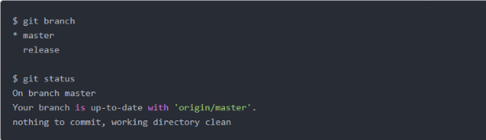
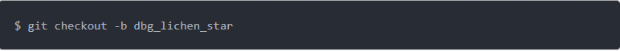
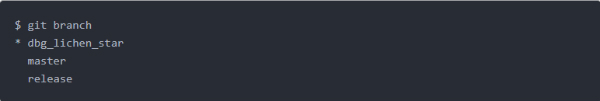
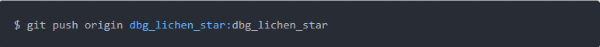
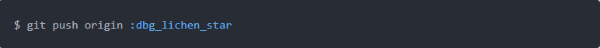
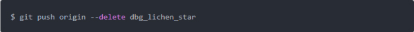

Now I am working on the branch of master, and there is nothing need for commit:

Create a new branch:

Now let`s check the current branch state:

Asterisk (*) represents the current branch. The current state is a new branch that has been successfully created and has switched to the new branch. Push the new local branch to the remote server with the same name as the local branch (you can name it what you want of course):

Here is a simple way to push an empty branch to a remote branch is to delete the remote branch.

Here is another way:
